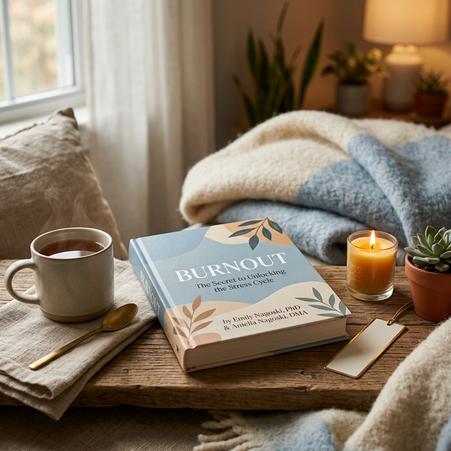
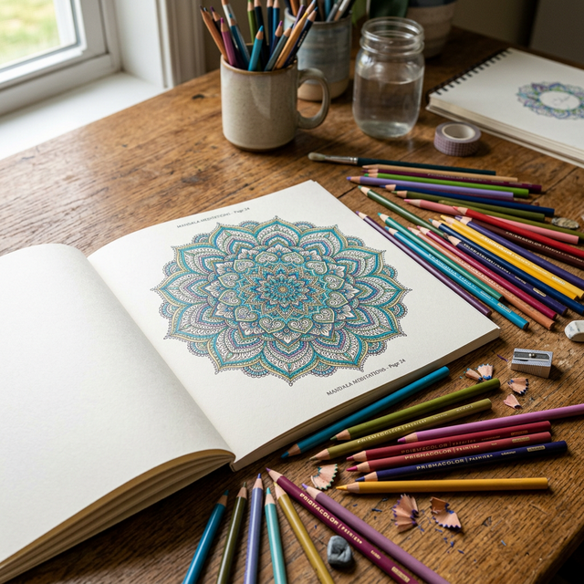

Self-Care Ideas for Bad Mental Health Days
Some days, "self-care" means a spa day. But on the truly bad mental health days—the ones where getting out of bed feels like climbing Everest—self-care means survival. It's not about being "better"; it's about being kinder to yourself while you wait for the storm to pass.
If you're in the middle of a hard day right now, don't try to do everything. Just pick one thing from the level that matches your energy right now.
Level 1: Zero Energy (The Survival Level)
- Drink one glass of water. Dehydration makes brain fog and anxiety worse. Even a few sips count.
- Wash your face with a cold cloth. The cold temperature triggers the "mammalian dive reflex," which physically slows your heart rate and resets your nervous system.
- Change your socks. It sounds silly, but a fresh pair of socks can make you feel 5% more human. Small wins matter.
- Open one window. Just for two minutes. Let the stale air out and some fresh air in. You don't even have to look outside.
- Brush your teeth. If you can't manage a full brush, just rinse with mouthwash. It's enough.
Level 2: Minimal Energy
- Take a 2-minute shower. Not a full routine. Just stand under the water. Let it hit your shoulders. Showers aren't just hygiene — they're nervous system resets.
- Eat something — anything. A piece of bread. A banana. A handful of crackers. Your brain can't function without fuel, and skipping meals deepens the spiral.
- Put on clean clothes. Even if you're not going anywhere. Sweatpants count. The act of changing tells your brain "a new part of the day has started."
- Step outside for 60 seconds. Barefoot on grass is ideal. But even standing on your porch counts. Fresh air and ground contact physically calm your nervous system.
- Delete the apps for a few hours. Social media comparison is poison on bad days. Remove the temptation. You can re-download them tomorrow.
Self-care can also mean receiving care ✨
Send yourself an affirmation card. Seriously — you deserve good words too. It's free and takes 30 seconds.
Send Yourself a Card ✨Level 3: Have Some Energy
- Go for a walk with no destination. No pedometer. No podcast. No goal. Just walk. Let your legs move and your brain wander. 10 minutes is enough.
- Clean one small thing. One counter. One sink. One pile of clothes. Cleaning your environment reduces decision fatigue and gives you a visible win.
- Cook something simple. Eggs. Pasta. Grilled cheese. The act of feeding yourself is an act of self-love, even if it doesn't feel like it.
- Call someone — even for 3 minutes. Voice connection hits different than texting. Hearing someone's voice activates parts of your brain that text can't reach.
- Write down three things that are true. Not positive — TRUE. "I am alive." "I ate today." "I opened the blinds." Evidence that you showed up, even on a hard day.
Level 4: Ready to Invest in Tomorrow
- Prep tomorrow's clothes. Lay them out tonight. Remove one decision from tomorrow's morning. Future-you will thank present-you.
- Unfollow accounts that make you feel bad. Curate your feed like your mental health depends on it — because it does.
- Write a "done" list instead of a "to-do" list. Write down what you DID today, no matter how small. "Got out of bed. Drank water. Read this article." That's progress.
- Set one intention for tomorrow. Just one. "I will eat breakfast." "I will go outside." Small, achievable, kind to yourself.
- Read one page of something. A book. An article. Even this blog post counts. Reading engages the prefrontal cortex, which is the part of your brain that anxiety tries to shut down.
Remember This
Bad mental health days are not failures. They're part of being human. The fact that you searched for this article means you're trying — and that counts for more than you know.
You don't have to do all 20 things. You don't have to do any of them. But if you pick just one, you've already changed the trajectory of your day. And that's enough.
Send an anonymous, beautifully designed digital affirmation card straight to their phone.
✨ Recommended Resources

An essential guide for any woman feeling overwhelmed and exhausted. Learn how to complete the stress cycle and find your way back to calm.
View on Amazon
A beautiful collection of patterns designed to help you focus, relax, and express your creativity during hard days.
View on Amazon